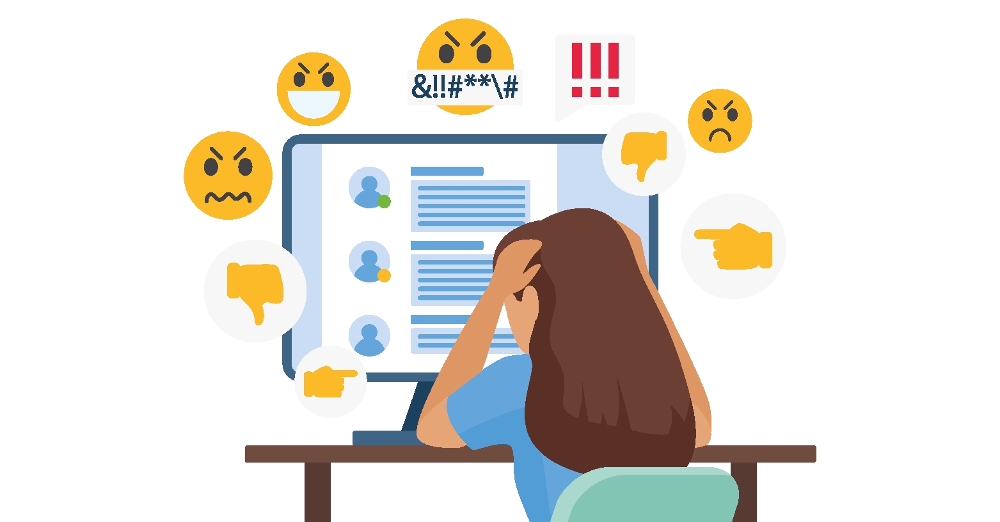
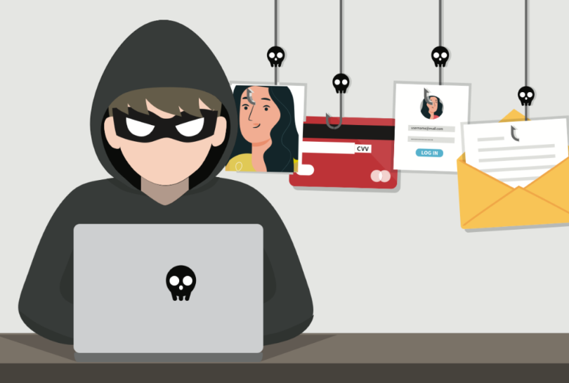
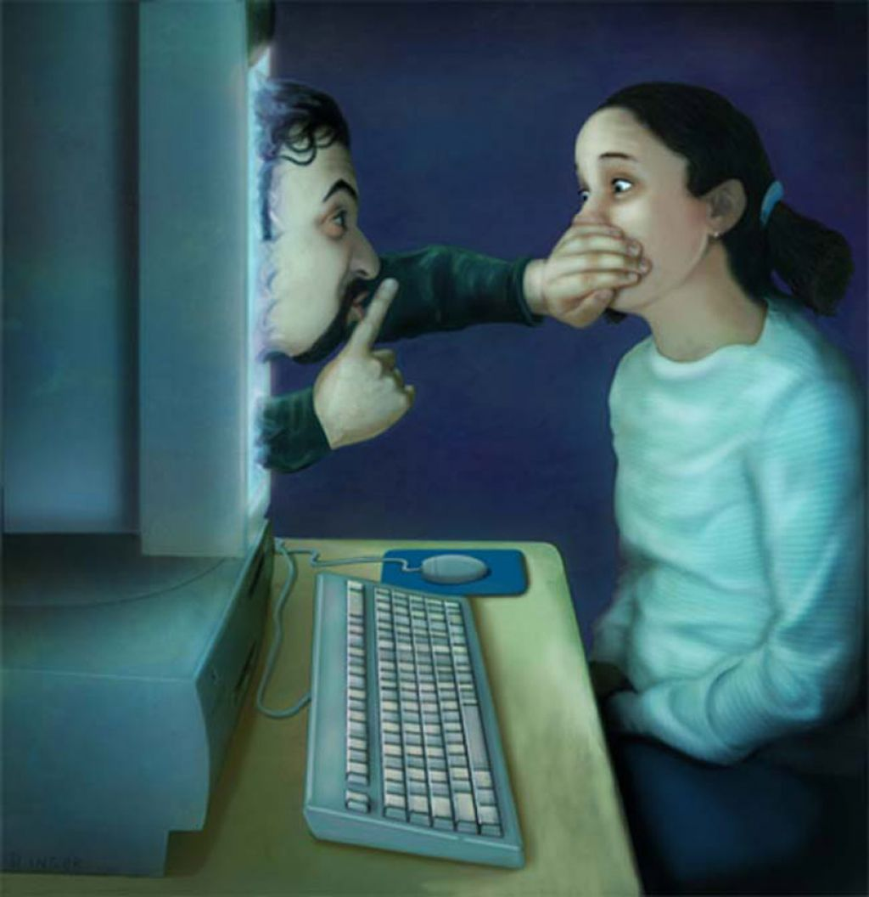
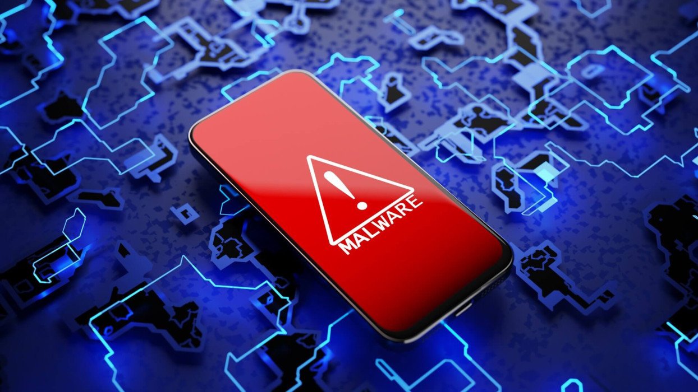

Principales riesgos para adolescentes en línea
Los jóvenes que navegan en internet enfrentan distintos peligros. Es fundamental conocerlos para saber cómo actuar y protegerse:
Ciberacoso
El ciberacoso ocurre cuando alguien utiliza medios digitales para acosar, intimidar o humillar a otra persona. Puede ser mediante mensajes, imágenes o videos.
Grooming
Es la práctica de adultos que fingen ser jóvenes para ganarse la confianza de menores con fines dañinos.
Phishing
Son mensajes o correos falsos que intentan engañarte para obtener información personal o financiera.
Sextorsión
Es un chantaje que utiliza imágenes o videos íntimos para exigir dinero o favores.
Malware
Programas maliciosos que pueden dañar tus dispositivos o robar información.
Fake news
Noticias falsas que buscan confundir o manipular opiniones.
Reconocer estos riesgos es el primer paso para protegerte. Si algo te incomoda en internet, ¡no estás solo! Siempre puedes pedir ayuda.